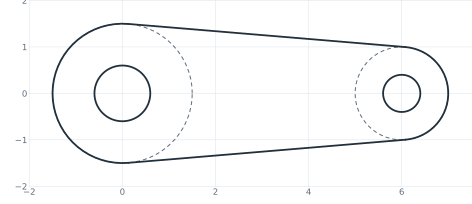
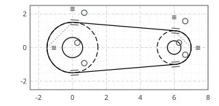
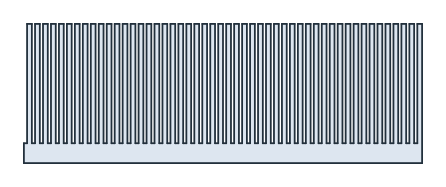
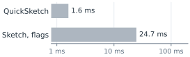

Sketch or QuickSketch
planex2d has two sketch types with the same drawing calls:
px.QuickSketchplaces every element once, from the pen and the references it is given, and keeps the geometry as drawn. No solver runs, so it stays fast for thousands of elements.px.Sketchdraws the same way and adds a constraint solver. Constraints, dimensions, expressions andUpdatekeep the intent of the drawing when a value changes. Withauto_constraint=True, the references of the drawing calls become constraints as well.
Both produce the same wires, faces and exports. A QuickSketch suits outlines that are drawn once, generated in a loop or imported. A px.Sketch suits parts whose dimensions change later, and geometry that has to be solved, such as a mechanism. One converts into the other (see Converting sketches). The pages of this section use the QuickSketch, and Constraint sketches adds the solver.
[1]:
import time
import numpy as np
import planex as px
The same link in both
The example is the link from Tangents: two bosses as construction circles, the lines tangent to both, the end arcs on the bosses, and a hole in each. One function draws it into any sketch. In a QuickSketch and in a plain px.Sketch, it has no constraints. With auto_constraint=True, the tangents and the joints become constraints (Figure 1).
[3]:
def link(sk):
sk.Circle(0, 0, 1.5, id="boss1", construction=True)
sk.Circle(6, 0, 1.0, id="boss2", construction=True)
sk.Line(tangent=("boss1", "boss2"), id="upper")
sk.Line(tangent=("boss1", "boss2"), reverse=True, id="lower")
sk.Arc("lower.end", "upper.end", congruent="boss2", id="end2")
sk.Arc("upper.start", "lower.start", congruent="boss1", id="end1")
sk.Circle(0.6, center="boss1.center", id="hole1")
sk.Circle(0.4, center="boss2.center", id="hole2")
return sk
quick = link(px.QuickSketch())
plain = link(px.Sketch())
tied = link(px.Sketch(auto_constraint=True))
for name, sk in (("Sketch()", plain), ("Sketch(auto_constraint=True)", tied)):
counts = {kind: len(entries) for kind, entries in sk.constraints.items()}
print(name, sk.dof, "degrees of freedom, constraints", counts)
print("the same face:", quick.Face().mass, tied.Face().mass)
Sketch() 28 degrees of freedom, constraints {}
Sketch(auto_constraint=True) 8 degrees of freedom, constraints {'Tangent': 4, 'Coincident': 8}
the same face: 18.523573419356737 18.523573419356737

(a) QuickSketch

(b) Sketch(auto_constraint=True)
The constraint sketch is not fully constrained yet, so it is drawn in black. With dimensions for the radii and the distance of the bosses, it becomes a parametric part, and the tangents keep the link a link when a dimension changes. See Drawing with constraints for details.
What a QuickSketch does not have
A QuickSketch has no constraint calls. Constrain, Expression, Update, dof and the other analysis functions belong to px.Sketch. A constraint flag, or auto_constraint=True, raises an error that names the alternative. The references of the drawing calls work as in any sketch:
[5]:
qs = px.QuickSketch().Line(10, 0, id="a").Line(0, 5, id="b")
print("Constrain in a QuickSketch:", hasattr(qs, "Constrain"))
try:
qs.Line(-10, 0, px.Horizontal)
except ValueError as err:
print(err)
try:
px.QuickSketch(auto_constraint=True)
except ValueError as err:
print(err)
qs.Move((0, 5)).Line("b", parallel="a", id="c")
c = qs.Geometry("c")
print('Line("b", parallel="a"):', c["start"], "to", c["end"])
Constrain in a QuickSketch: False
px.Horizontal: a QuickSketch has no constraints; px.Sketch(...) has them
QuickSketch(auto_constraint=True): a QuickSketch has no constraints; px.Sketch(...) has them
Line("b", parallel="a"): (0.0, 5.0) to (10.0, 5.0)
px.Move((h, v)) starts a QuickSketch with its pen at a point. px.Sketch((h, v)) and px.QuickSketch((h, v)) do the same for the respective sketch type.
Speed: generated outlines
The example is a heat sink comb generated in a loop, with 50 fins of 30 on a base of 5 and four lines per fin. A QuickSketch draws it without solving. A px.Sketch with the flags px.Horizontal and px.Vertical on every line keeps each line’s direction as a constraint and solves as it draws, which takes time. Both give the same face. The times are measured on the machine that built this page.
[6]:
def comb(kind, n, flags=False):
pitch, fin, width, base = 2.0, 30.0, 1.2, 5.0
h, v = ((px.Horizontal,), (px.Vertical,)) if flags else ((), ())
sk = kind((0, 0), dir=(1, 0))
for _ in range(n):
sk.Line(pitch - width, 0, *h).Line(0, fin, *v)
sk.Line(width, 0, *h).Line(0, -fin, *v)
sk.Line(0, -base, *v).Line(-n * pitch, 0, *h).Close(*v)
return sk.Face(), n * pitch * base + n * width * fin
times = {}
runs = (("QuickSketch", px.QuickSketch, False), ("Sketch, flags", px.Sketch, True))
for name, kind, flags in runs:
start = time.perf_counter()
face, exact = comb(kind, 50, flags)
times[name] = time.perf_counter() - start
print(f"{name}: {times[name]:.4f} s, area {face.mass}, exact {exact}")
QuickSketch: 0.0016 s, area 2300.0000000000005, exact 2300.0
Sketch, flags: 0.0247 s, area 2300.0000000000005, exact 2300.0


Points from a file or a computation need no sketch at all: px.FromPolyline(points, closed=True) creates the wire directly. The example builds an outline of 20,000 measured points in three ways, with the times again measured on the build machine:
[8]:
a = np.linspace(0, 2 * np.pi, 20000, endpoint=False)
rho = 10 * (1 + 0.05 * np.sin(20 * a))
points = np.column_stack([rho * np.cos(a), rho * np.sin(a)])
def by_sketch(kind):
sk = kind(points[0])
for p in points[1:]:
sk.Line(p)
return sk.Close().Face()
ways = {"QuickSketch": lambda: by_sketch(px.QuickSketch),
"Sketch": lambda: by_sketch(px.Sketch),
"px.FromPolyline": lambda: px.Face([px.FromPolyline(points, closed=True)])}
for name, way in ways.items():
start = time.perf_counter()
face = way()
print(f"{name}: {time.perf_counter() - start:.3f} s, area {face.mass}")
QuickSketch: 0.173 s, area 314.55195151496093
Sketch: 0.306 s, area 314.55195151496093
px.FromPolyline: 0.133 s, area 314.55195151496093